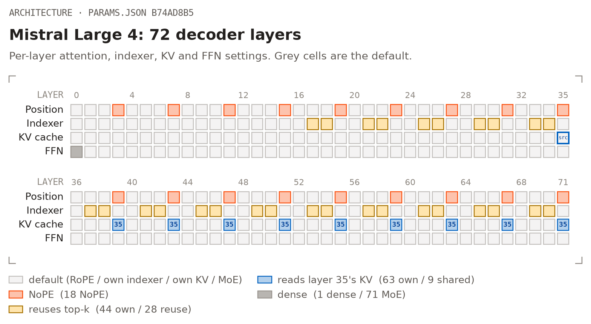
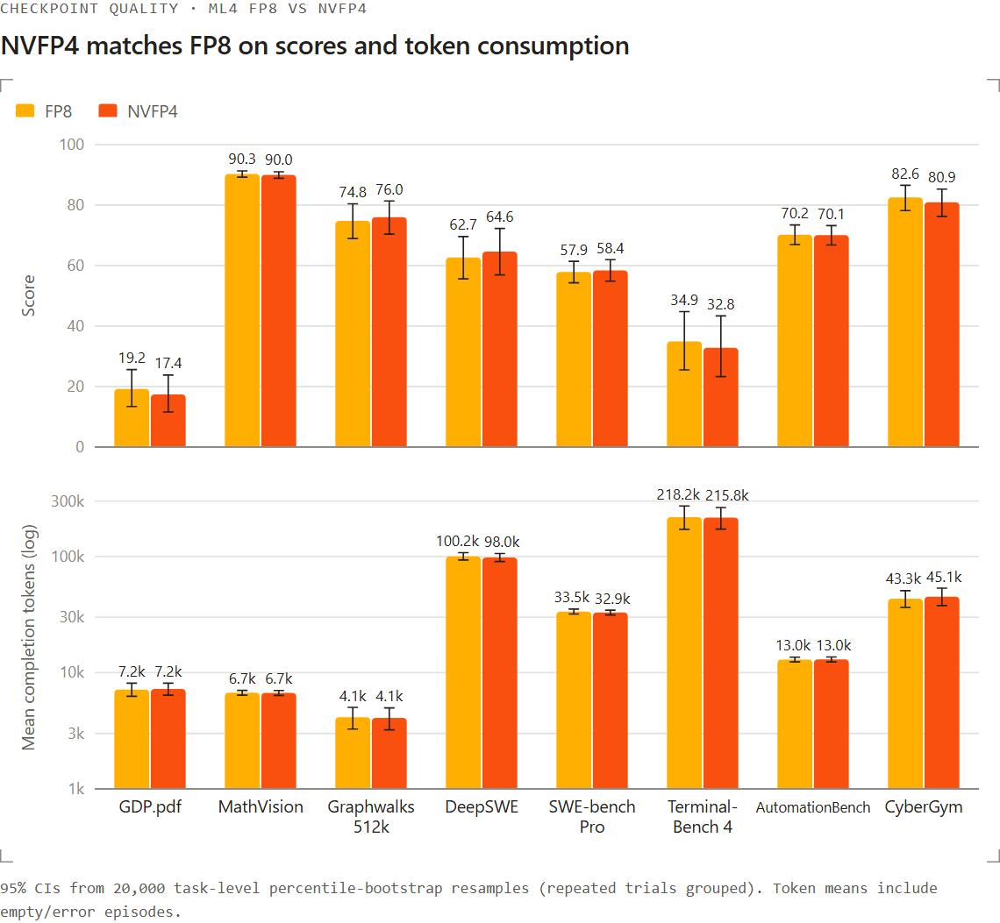
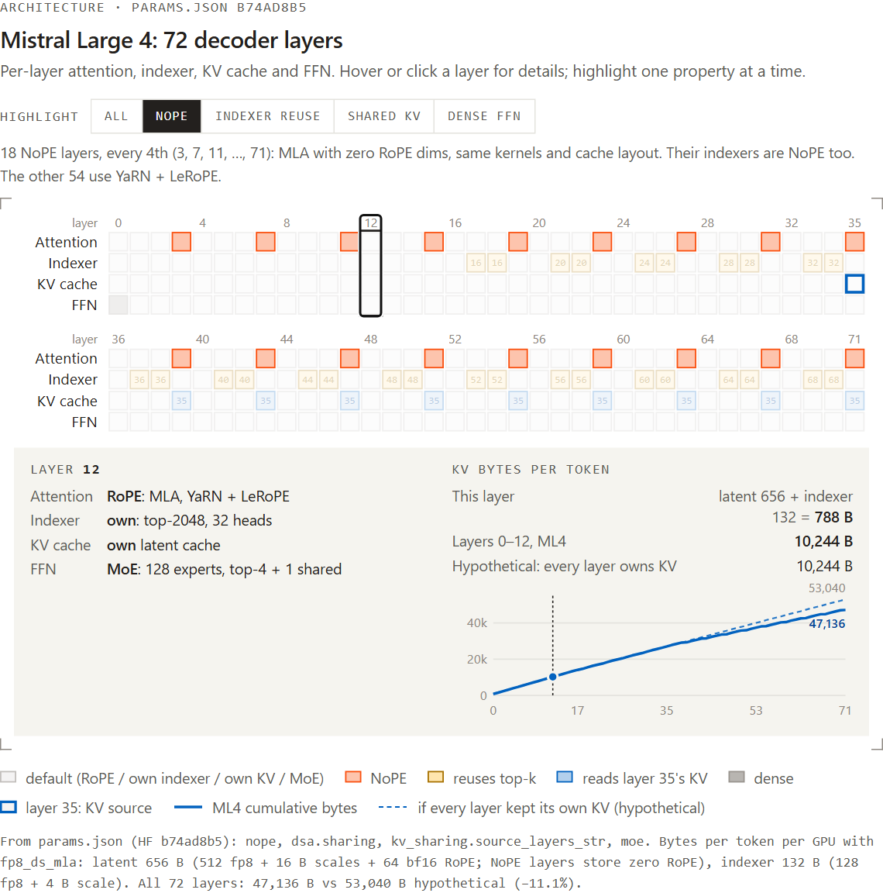
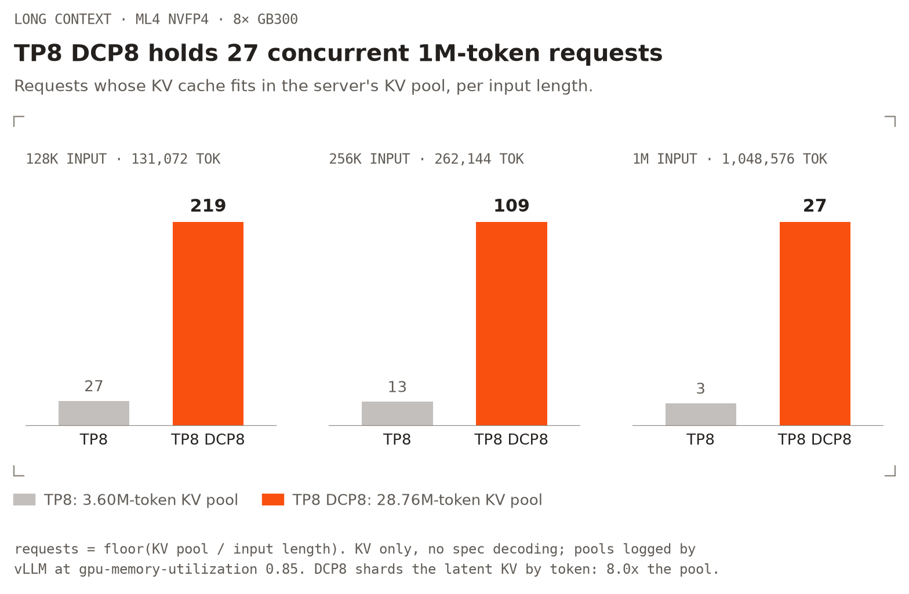
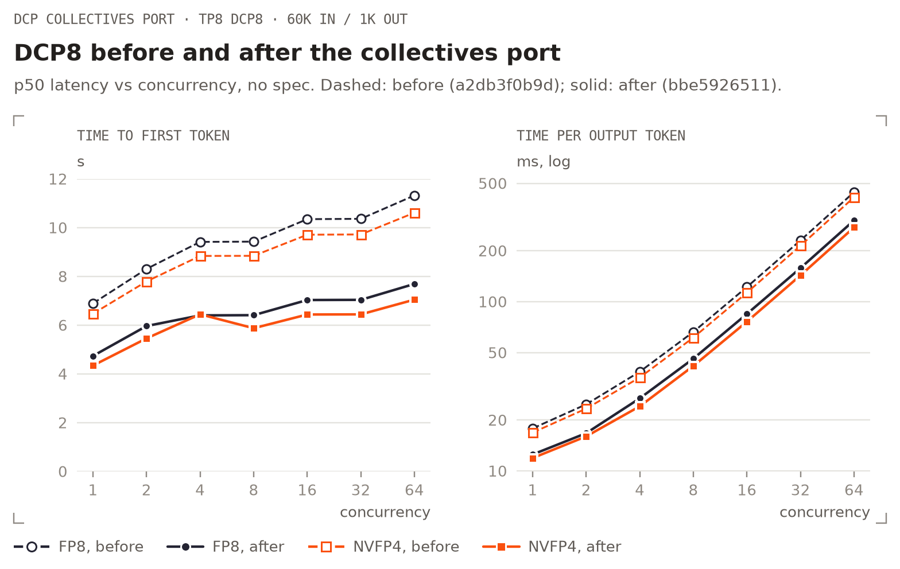
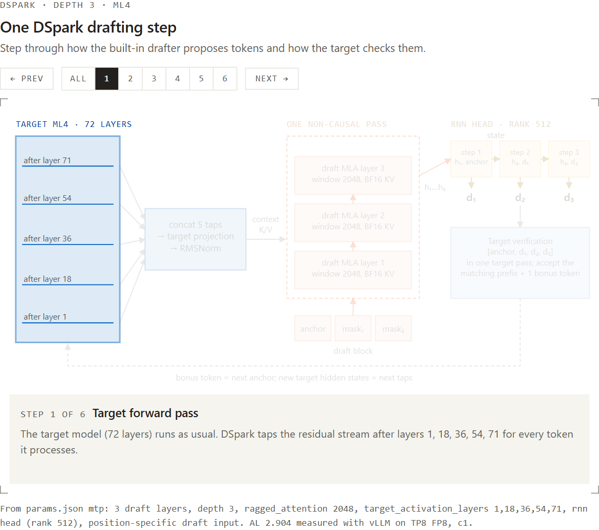
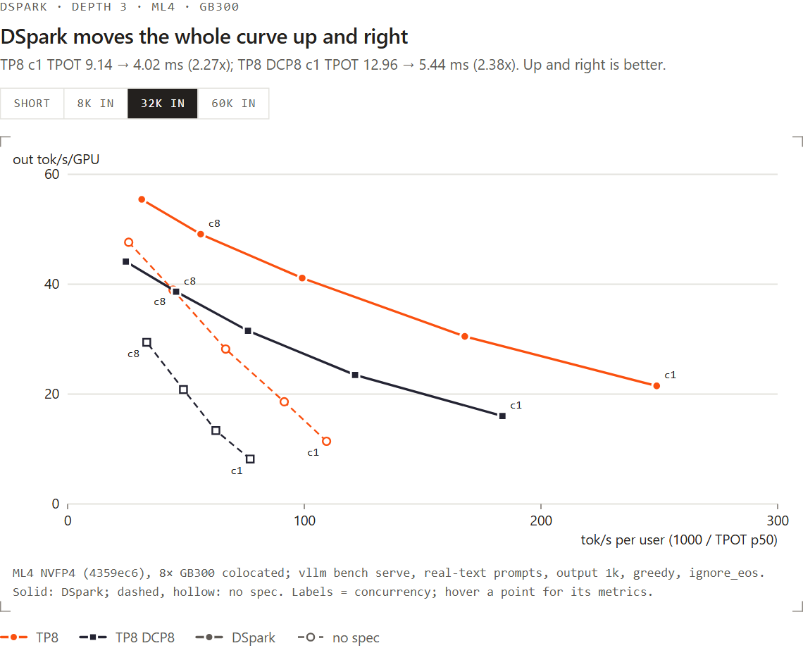
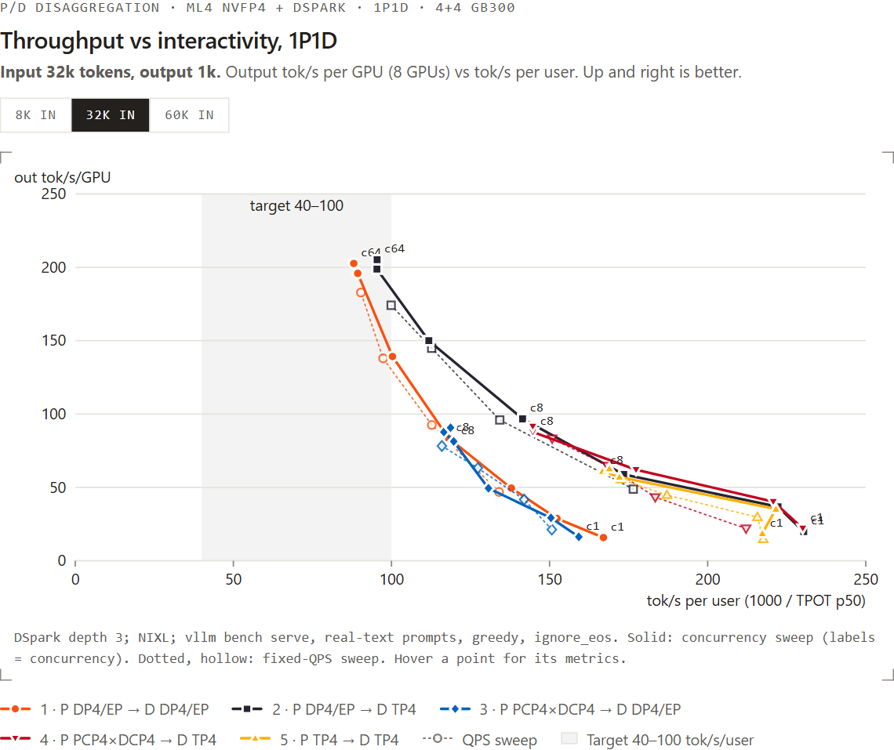
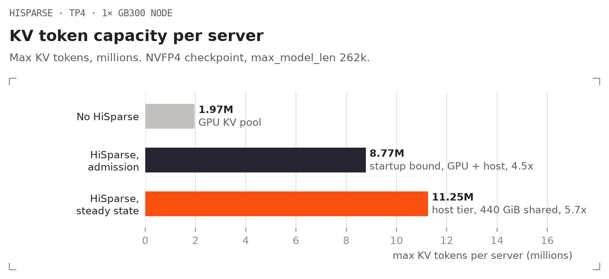

我们很高兴地宣布，vLLM 从发布首日即支持 Mistral Large 4。Mistral Large 4 是 Mistral 新一代前沿混合专家（Mixture-of-Experts，MoE）原生多模态模型。它将 DeepSeek 风格的稀疏注意力栈（MLA 加 DSA top-k 索引器）与多项新架构特性结合起来，包括跨层 KV 共享、NoPE 层、SSMax 和 LeRoPE。模型还内置用于推测解码的 DSpark 草稿模型和 Pixtral 视觉编码器。
支持该模型所需的工作远不止添加一个模型文件。ML4 运行在 vLLM 模型运行器 V2（Model Runner V2，MRV2）上，并使用可中断 CUDA Graph。它的构建模块位于新的 vllm/models/mistral/ 包中；相关工作也为解码上下文并行（Decode Context Parallelism，DCP）、预填充上下文并行（Prefill Context Parallelism，PCP）、DSpark、基于 NIXL 的预填充/解码分离式服务，以及 HiSparse 主机内存 KV 卸载带来了通用改进。
要点速览
- 架构： 72 层 MoE，包含 128 个路由专家（top-4）和 1 个共享专家，隐藏层维度为 6144。注意力采用 MLA（KV LoRA 秩 512，RoPE 维度 64），DSA 稀疏索引器为每个查询选择 top 2048 个 key。总参数量为 1 万亿，每个 token 激活 490 亿参数（若计入嵌入层和输出层则为 520 亿）。
- 检查点： FP8（分块缩放权重）和 NVFP4（NVFP4 路由专家，FP8 注意力/共享专家）。两者默认都使用 FP8 潜在 KV 缓存（
fp8_ds_mla）。 - 多模态： 使用 Pixtral 视觉编码器处理图像输入，包括在一个提示中输入多张图像。
- 推测解码： 内置 DSpark 草稿模型（3 个滑动窗口 MLA 层，深度 3），每步平均接受约 2.9 个 token，在 TP8 上可将输出吞吐量提高约 2 倍。
- 长上下文： DCP 在 TP8 上将 KV 容量提高约 7.9 倍。PCP+DCP 预填充可将首 token 时间（TTFT）最多缩短 1.6 倍。两种模式下均可使用 DSpark。
- 分离式服务： 通过 NIXL 实现预填充/解码（P/D）分离，可使用 DP/EP、TP 和 PCP×DCP 预填充节点，并在两侧启用 DSpark。
- HiSparse： 主机内存稀疏 KV 卸载，现已支持跨层 KV 共享。
- AMD： 在采用 ROCm 的 AMD Instinct MI350 系列 GPU 上从发布首日即获支持，包括 DSpark、图像输入，以及使用 MXFP4 路由专家的专家并行。
使用方法
Mistral Large 4 支持随 vllm/vllm-openai:mistral-large-4 Docker 镜像发布，该镜像还包含 mistral-common 1.13。以下命令在镜像中运行 vllm serve：
docker pull vllm/vllm-openai:mistral-large-4
在 8 张 GPU 上运行 FP8：
vllm serve mistralai/Mistral-Large-4-1T-A52B \
--tensor-parallel-size 8 \
--speculative-config '{"method": "dspark", "num_speculative_tokens": 3}' \
--tool-call-parser mistral --enable-auto-tool-choice \
--reasoning-parser mistral
在 4 张 GPU 上运行 NVFP4（Blackwell；使用 8 张 GPU 时将其设置为 --tensor-parallel-size 8）：
vllm serve mistralai/Mistral-Large-4-1T-A52B-NVFP4 \
--tensor-parallel-size 4 \
--speculative-config '{"method": "dspark", "num_speculative_tokens": 3}' \
--tool-call-parser mistral --enable-auto-tool-choice \
--reasoning-parser mistral
NVFP4 并未以质量换取速度。在多模态、长上下文、智能体编程、业务自动化和网络安全评测中，它在每项任务上与 FP8 的差距均不超过 2.1 分，平均差值为 −0.3 分。两者的 token 消耗也相当：平均补全 token 数与 FP8 的差距约在 4% 以内。同时，NVFP4 更快且占用更小：在 TP8 上，不使用推测解码时，NVFP4 的单 token 解码速度比 FP8 快 1.08～1.19 倍；使用 DSpark 时快 1.18～1.22 倍，并可容纳约 1.5 倍的 KV 缓存。
查看静态备用图

核心评测中 FP8 与 NVFP4 的分数和 token 消耗对比。误差线表示通过 bootstrap 估算的 95% 置信区间。在所有领域中，包括多模态推理（GDP.pdf、MathVision）、长上下文（Graphwalks 512k）、编程智能体（DeepSWE、SWE-bench Pro、Terminal-Bench 4）、业务自动化（AutomationBench）和网络安全（CyberGym），NVFP4 检查点均与 FP8 的行为相当。
长上下文（DCP）。 添加 --decode-context-parallel-size 8，即可在 8 个 rank 之间对潜在 KV 缓存分片。该模式要求使用默认的 FP8 KV 缓存。
多模态。 传入 --limit-mm-per-prompt '{"image": N}'，允许每个提示最多包含 N 张图像。
有关多节点、P/D 分离和其他经过测试的配置，请参阅 Mistral Large 4 配方。
实现细节
模型架构
| 组件 | Mistral Large 4 |
|---|---|
| 层数 / 隐藏层维度 / 注意力头数 | 72 / 6144 / 64 |
| 注意力 | MLA，无 query LoRA，KV LoRA 秩 512，RoPE 维度 64 |
| 稀疏注意力 | DSA 索引器，top-k 2048，32 个索引头；44 层拥有自己的索引器，28 层复用最近的较早索引器层的 top-k |
| 位置编码 | YaRN + LeRoPE（逐频率学习缩放）；每第 4 层为 NoPE |
| 查询缩放 | 每个注意力层和索引器均使用 SSMax（依赖序列长度的 query 缩放） |
| KV 共享 | 9 层（39、43、…、71）读取第 35 层的潜在缓存（每 4 层一次） |
| MoE | 第 0 层为稠密层；第 1～71 层：128 个专家，top-4，1 个共享专家 |
| 输出 | logit soft cap 30 |
| 视觉 | Pixtral 编码器（30 层，隐藏层维度 2048，patch 14） |
查看静态备用图

72 个解码器层：每第 4 层为 NoPE；28 层复用最近的前置索引器层的 top-k；第 39～71 层中的 NoPE 层读取第 35 层的潜在 KV；只有第 0 层为稠密层。
为了让 vLLM 支持各个组成部分，我们完成了以下工作：
稀疏 MLA + DSA 索引器。 ML4 复用了 vLLM 的稀疏 MLA 栈：采用带 fp8_ds_mla 潜在缓存的 FlashMLA sparse，并使用带 FP8 索引器缓存的稀疏索引器。在此基础上叠加了 ML4 特有的差异：共享索引器层会复用最近的较早索引器层的 top-k；索引器拥有自己的 SSMax；NoPE 层上还会使用 NoPE 索引器。每个 token 的 KV 缓存占用 47,136 字节，其中 MLA 潜在表示占 41,328 字节，索引器占 5,808 字节。
跨层 KV 共享。 9 个 NoPE 层不写入自己的潜在 KV，而是读取第 35 层写入的潜在 KV。我们在 MLAAttention 和 AttentionLayerBase 中加入了 kv_sharing_target_layer_name。消费层会跳过缓存写入，V2 运行器则将其解析到目标层的 KV 缓存规范。消费层不占用 KV 内存：72 层中只有 63 层拥有缓存。该能力与模型无关，正在通过 vllm#64095 向上游合入。
NoPE、SSMax 和 LeRoPE。 NoPE 层被表示为 RoPE 维度为零的 MLA，因此仍使用相同的内核和缓存布局。LeRoPE 被折叠进 YaRN 的频率中。SSMax 融合进 MLA RoPE 内核（参见下文的融合优化）。
Mistral 模型包。 本次移植没有继续向 deepseek_v2.py 添加开关，而是基于 vllm/models/mistral/ 下的可复用 Mistral 组件构建：注意力、索引器、SSMax、MLP、MoE、融合算子，以及逐层规范（common/layer_spec.py）。ML4 模型本身位于 vllm/models/mistral_large4/nvidia/model.py，DSpark 草稿模型位于同一目录下（dspark.py）。逐层特性（RoPE/NoPE、索引器所有者/共享者、KV 所有者/消费者）来自根据 params.json 构建的层规范，而不是共享代码中的模型专用分支。
模型运行器 V2。 ML4 只能在 MRV2 上运行。V2 注意力工具会发现 KV 共享层，并查找对应的目标规范。DSpark 则接入 V2 DFlash/DSpark 推测器。
可中断 CUDA Graph 与融合。 ML4 无需 torch.compile 即可运行。它使用可中断 CUDA Graph；系统会针对该架构自动启用此功能，多模态封装内部的文本模型同样适用。相较 eager 模式，它带来了约 6 倍加速。手写融合算子替代了通常由编译器完成的工作，并进一步提供优化空间：
- 第一轮：SSMax、MLA RoPE + SSMax、索引器 Q 路径和索引器 K 路径。这些优化使解码 TPOT 降低 8%～10%。
- 解码轮次：FP32 路由器 GEMM、索引器 query 的单次启动 Triton LayerNorm、在一个 FlashInfer 内核中完成 all-reduce + residual + RMSNorm，以及将索引器 K 直接写入 FP8 缓存。在 TP8 FP8 上，c1 TPOT 从 10.22 ms 降至 9.00 ms（−12%），c8 则从 16.01 ms 降至 15.08 ms。
长上下文：解码与预填充上下文并行
DCP。 MLA 只保留一个潜在 KV 头，因此在 TP 下，每个 rank 都会复制该缓存。DCP 则按 token 对其分片。在 TP8 上，DCP8 将 FP8 的 KV 容量从 238 万 token 提高到 1,888 万 token，将 NVFP4 的容量从 360 万 token 提高到 2,876 万 token。

使用 ML4 NVFP4 在 8× GB300 上比较 TP8 和 TP8 DCP8：可放入 KV 缓存的并发 128k / 256k / 1M-token 请求数，计算方式为 floor(KV 池 / 输入长度)。TP8 和 TP8 DCP8 的 KV 池分别为 360 万和 2,876 万 token，gpu-memory-utilization 为 0.85。
此前，DCP 与稀疏 MLA 开箱即用时，每个解码步骤都需要付出很高的固定开销。对 60k 上下文进行分析显示，每步约有 7 ms 的 DCP 专属工作：
- 对 LSE 和索引器 top-k 候选项执行 NCCL all-gather（44 个索引器层）；
- reduce-scatter；
- 稳定的 top-k 合并；
- query gather；
- 小型掩码内核和内核启动间隙。
我们用以下方案替换了这些操作：
- FlashMLA sparse 的 a2a combine（已通过 vllm#61285 合入）：使用基于对称内存的 all-to-all LSE 合并，替代 all-gather + reduce-scatter。ML4 默认使用该方案。
- 直接 top-k 交换： 每个 rank 将打包后的（score, id）候选项推送到其他 rank 的对称内存收件箱中，选择器直接就地读取。它替代了每个索引器层的一次 NCCL all-gather 和一次 6 遍 radix select。
- Top-k 压缩： 对于 32 个及以上 token 的批次，每个 rank 压缩自己的有效 top-k 槽位，并用
topk_length限制内核范围，而不是扫描 2048 个充满-1的槽位。在一次 5k-token 预填充分析中，注意力耗时从 165 ms 降至 38 ms。 - 一个融合内核会将空行中和处理（即某个 rank 不拥有某个 query 的任何 top-k 槽位）。
DCP 专属开销降至每步 3.2 ms。结合解码融合，在 TP8 DCP8 FP8（60k 输入 / 1k 输出）上：
| 优化前 | 优化后 | |
|---|---|---|
| c1 TTFT p50 | 6.89 s | 4.73 s |
| c1 TPOT p50 | 17.82 ms | 12.50 ms |
| c64 输出 tok/s | 139.1 | 204.0（+47%） |

TP8 DCP8（60k 输入 / 1k 输出，无推测解码）在不同并发度下的 TTFT 和 TPOT p50：对比 DCP 集合通信移植及解码融合之前（a2db3f0b9d）与之后（bbe5926511）。这些 DCP 优化随 Mistral Large 4 的首日支持一同发布。
何时使用 DCP。 DCP 以单步延迟换取 KV 容量。在同一套 8× GB300 NVFP4 部署和工作负载上（不使用推测解码），DCP8 的单 token 解码速度比 TP8 慢约 16%～28%：输入为 8k 时，c1 TPOT 分别为 11.1 和 8.7 ms；输入为 60k 时，分别为 11.4 和 9.1 ms。在 8k～60k token、并发数最高 128 的请求下，TP8 的 360 万 token 池从未成为瓶颈，因此 TP8 在该范围内提供更高吞吐量。当 KV 成为限制因素时，DCP8 才能体现收益，例如超长上下文或大量并发的长生命周期会话。在我们的智能体 P/D 运行中（会话约为 100k token），一个 TP4 DCP4 解码节点在 32 个会话下仍将 TTFT 保持在 0.7 s；普通 TP4 解码节点则会耗尽 KV，TTFT 上升到 15 s。
PCP + DCP 预填充。 对于长提示，PCP 会将单个提示的 token 分散到多个 rank。现在，ML4 可在 CUDA Graph 下结合 PCP+DCP 使用，包括 DCP > PCP 的情况以及 DSpark。两项修复使其得以正常工作：
- 在 PCP 下，MLA KV 缓存写入会先在 PCP rank 之间 all-gather 输入；该 gather 依赖当前批次中预填充与解码的划分。如果在分段图（piecewise graph）中捕获，这个划分会冻结在捕获时。现在只有 gather 会作为 eager break 运行并写入固定大小缓冲区，缓存写入本身仍保留在图中。
- DCP 组中的 rank 顺序会与集合通信返回数据的顺序保持一致。
在 TP1×PCP4×DCP4 上启用图后，GSM8K-200 分数从 0.315 提高到 0.975。启用 DSpark 后可达到 0.980。作为 P/D 预填充节点，PCP4×DCP4 提供了我们测得的最低 TTFT（见 P/D 部分）。
DSpark 推测解码
ML4 在检查点中内置 DSpark 草稿模型（mtp_dspark.* 张量，以及 params.json 中的 mtp 块）。DSpark 是一种并行草稿模型：一个小型非因果 Transformer 在一次前向传播中提出一个块的所有草稿位置。它以目标模型第 1、18、36、54 和 71 层抽取的隐藏状态作为条件。ML4 的草稿模型新增了：
- RNN 马尔可夫头： 一个门控循环状态（秩 512）跨草稿位置运行，因此每个位置的 logits 都依赖它之前生成的草稿 token；
- 逐位置掩码输入： 每个草稿槽位都拥有自己的可学习输入嵌入，而非共享一个掩码 token；
- 滑动窗口 MLA 草稿层： 3 个 MLA 层，窗口大小为 2048 token，使用 BF16 KV 缓存，并位于独立的 KV 缓存组中。Triton MLA 后端为这些层新增了滑动窗口解码支持。
查看静态备用图

一次 DSpark 步骤：目标模型抽取的状态为草稿模型提供上下文 K/V；[anchor, mask_1, mask_2] 块在一次前向传播中通过 3 个滑动窗口 MLA 层；RNN 头按顺序生成 3 个草稿 token；随后由目标模型进行验证。
使用 --speculative-config '{"method": "dspark", "num_speculative_tokens": 3}' 即可启用。
结果。 TP8，200 个真实提示，贪心解码（温度 0），最多输出 512 个 token：
| FP8 基础 TPOT | FP8 DSpark TPOT（AL） | NVFP4 基础 TPOT | NVFP4 DSpark TPOT（AL） | |
|---|---|---|---|---|
| c1 | 8.84 ms | 3.50 ms（2.90） | 8.21 ms | 2.95 ms（2.93） |
| c8 | 15.28 ms | 7.08 ms（2.85） | 12.85 ms | 5.80 ms（2.86） |
| c32 | 29.92 ms | 11.57 ms（2.85） | 25.38 ms | 9.80 ms（2.86） |
该表使用贪心解码。启用采样后，接受率仍很接近：在温度 1.0 / top-p 0.95、并发度 8 下，平均接受长度（AL）约为 2.8。温度更高时，可在推测配置中设置 "draft_sample_method": "probabilistic"：在 T=1.5 时，它会将 AL 从 2.04 提高到 2.36～2.53（吞吐量提高 12%～22%）。由于使用标准拒绝采样，两种模式均无损。
在相同并发度下，DSpark 将 FP8 的输出吞吐量提高 1.9～2.1 倍，将 NVFP4 的输出吞吐量提高 1.9～2.2 倍。它不会改变模型生成的内容：每个草稿 token 都会由目标模型验证，我们也进行了实证检查。当基础模型重新为 DSpark 的输出打分时，其结果与基础模型自身贪心选择的匹配程度，与基础模型自身输出的匹配程度相同。在 GSM8K（1,319 道题）上，FP8 不使用 DSpark 时得分为 0.909，使用后为 0.918。
查看静态备用图

每张 GPU 的输出 tok/s 与每位用户的 tok/s（1000 / TPOT p50）对比；虚线表示未启用 DSpark，实线表示启用 DSpark（深度 3）。Short 对应上表中的 200 提示 TP8 运行。8k / 32k / 60k 对应 ML4 NVFP4 在 8× GB300 上的共置部署，分别使用 TP8 和 TP8 DCP8，通过 vllm bench serve 输入真实文本提示并输出 1k token；60k 仅有 DSpark 运行数据。
DSpark + DCP。 在这项工作之前，滑动窗口 MLA 草稿模型无法在 DCP 下运行。现在，草稿模型的小型窗口缓存（3 层 × 约 2k token，每个请求约 7 MB）会复制到每个 DCP rank，而目标缓存仍按 DCP 分片。这将现有支持（vllm#56723）扩展到了窗口化 MLA 草稿模型。在 60k 上下文的 TP8 DCP8 上，c1 TPOT 从 11.82 ms 降至 5.22 ms（2.26 倍，AL 2.85），GSM8K-200 仍为 0.965。
代价是 KV 容量：在 DCP8 下，每个 64-token 草稿块占用一个 block ID，而该 ID 对应的目标页面覆盖 512 个 token。在 64k 上下文下，容量降至普通 DCP8 的约 0.69 倍。当 max_num_seqs 为 128 且平均上下文低于约 99k 时，这一限制不会成为瓶颈。
P/D 中的 DSpark。 DCP 预填充节点可以将结果交接给启用 DSpark 的 TP 解码节点，并在两侧启用 DSpark。NIXL 从一个预填充 rank 拉取复制的草稿窗口，并按 DCP 切片拉取目标 KV。任何 P/D 布局下的接受率都相同：输入为 8k / 32k / 60k 时，分别约为 2.98 / 2.86 / 2.78。
滑动窗口 MLA 草稿层和 DCP 下的 DSpark 正在通过 vllm#63795 和 vllm#63796 向上游合入。
使用 NIXL 的分离式服务
我们在 4+4 张 GB300 GPU（一个 NVL72 机架）上使用 NIXL 对 1P1D 进行了基准测试。设置如下：
- 两侧均使用 NVFP4 + DSpark，所有位置都启用 CUDA Graph，不启用前缀缓存；
- 使用
vllm bench serve输入固定长度提示：每种输入长度包含 320 个独一无二的单轮聊天提示，每个提示严格为 8,192 / 32,768 / 60,000 token。每个提示都由一段自然文本（WikiText-2 和 GSM8K 问题）及随后的一道问题组成；提示之间没有共享前缀，并以 token ID 发送； - 每个请求输出 1,024 个 token（贪心解码，忽略 EOS）；
- 分别扫描并发度和固定 QPS。
所有配置在通过代理运行 GSM8K-200 时得分均为 0.965～0.980，NIXL 传输失败和请求失败数量均为零。
查看静态备用图

在 4+4 张 GB300 上运行 1P1D 时，每张 GPU 的输出 tok/s 与每位用户的 tok/s。实线表示并发度扫描，空心/点线标记表示固定 QPS 扫描。
在给定最低单用户速度时，每张 GPU（共 8 张 GPU）的最佳输出 tok/s 如下：
| P → D | 8k，≥40 tok/s/用户 | 8k，≥100 | 32k，≥40 | 32k，≥100 | 60k，≥40 / ≥100 | c1 TTFT：8k / 32k / 60k |
|---|---|---|---|---|---|---|
| P DP4/EP → D DP4/EP | 718.2 | 176.7 | 202.6 | 139.2 | 108.8 | 0.49 / 1.90 / 3.65 s |
| P DP4/EP → D TP4 | 459.2 | 194.2 | 205.2 | 150.0 | 107.2 | 0.46 / 1.88 / 3.66 s |
| P PCP4×DCP4 → D TP4 | 350.6 | 192.6 | 91.5 | 91.5 | 49.8 | 0.35 / 1.37 / 2.57 s |
| P TP4 → D TP4 | 259.2 | 185.3 | 62.8 | 62.8 | 32.3 | 0.52 / 2.07 / 4.02 s |
AMD
从发布首日起，Mistral Large 4 就可以通过 vLLM 的 ROCm 构建版本运行在 AMD Instinct MI350 系列 GPU 上。稀疏 MLA 使用 AITER 的 MLA 解码内核，DSA 索引器则使用 AITER 的 gfx950 索引器。
MXFP4 专家。 在 ROCm 上，路由专家以 OCP MXFP4 格式运行在 AITER 的融合 MoE 上。获得这些专家有两种方式：
- AMD Quark MXFP4 检查点（Mistral-Large-4-1T-A52B-Quark-MXFP4）。Quark 只对路由 专家重新量化，采用静态权重尺度和动态激活尺度。注意力、共享专家、稠密前馈层、 路由器、输出头、视觉编码器和 DSpark 草稿模型均保留原始精度。检查点从约 1,061 GB 缩小到 578 GB， 因而可在四张 MI350 系列 GPU（每张 288 GB）上提供服务。服务命令、评测结果和复现方法见模型卡。
- 加载时重新量化 FP8 检查点（
VLLM_FP8_MOE_REQUANT=mxfp4）。加载过程中逐层转换专家， 因而峰值内存也足够低，可用于 TP4。TP8 下每张 GPU 的专家权重从约 125 GiB 降到 69 GiB， 在 1～64 个并发请求下，输出吞吐量相较直接服务 FP8 专家提高 22%～71%。VLLM_FP8_MOE_REQUANT_ACT用于设置 MXFP4 专家计算所使用的激活格式：a8w4（FP8 激活，默认值）或a4w4（MXFP4 激活）。
无论采用哪种方式，一台 8-GPU 节点都能运行两个 TP4 副本；与相同四张 GPU 上的 FP8 专家相比，每个副本留给 KV 缓存和激活的 HBM 约为其 6 倍。
功能。 ROCm 支持 TP8 和 TP4、专家并行、通过 Pixtral 编码器处理图像输入，以及使用检查点内置草稿模型的 DSpark 推测解码。
在采用 FP8 KV 缓存的 MI350X TP4 配置上，面对真实提示词时，DSpark 每步接受 3.1 个 token；在 1、8 和 32 个请求下，
每 token 解码延迟分别降低 2.7 倍、1.9 倍和 1.8 倍（输出吞吐量分别提高 2.1 倍、1.6 倍和 1.4 倍）。
在 ROCm 上，潜在 KV 缓存默认使用 FP8（E4M3），其 KV 容量是 bf16 的 1.86 倍；可通过 --kv-cache-dtype bfloat16 退出此默认设置。
AITER。 VLLM_ROCM_USE_AITER=1 会让 vLLM 的热点路径运行在 AMD 的内核库 AITER 上，包括融合 MoE（MXFP4 专家运行在
两阶段 FlyDSL 内核上）、分块 FP8 和 bf16 GEMM、MLA 解码内核、RMSNorm，以及张量并行自定义 all-reduce。
ROCm 镜像随附了针对该模型 MoE 和 GEMM 形状的 AITER 调优表；启动时，AITER 会将这些调优表与自身表项合并。在 TP4 下，
它们可使 1～8 个并发请求的输出吞吐量提高 9%～16%。另外两项设置还能进一步提升性能：
VLLM_ROCM_USE_AITER_TRITON_SPARSE_MLA=1 让稀疏 MLA 运行在 AITER 的 Triton 内核上；
AITER_CUSTOM_AR_MAX_SIZE=134217728 则让大型预填充步骤的 all-reduce（最大 128 MiB）继续使用 AITER 自定义
all-reduce。二者结合可使 TP4 的输出吞吐量再提高 2%～5%，并让首 token 延迟降低 5%～7%。下面两个命令均设置了全部三项配置。
专用解码。 对于受延迟限制的服务，--additional-config '{"decode_backend": "latency_specialized"}' 会将
包含 1、2 或 4 个请求的解码步骤中每个 MoE 层作为一次持久化 FlyDSL 内核启动来运行。该次启动会融合注意力、
索引器、路由器、MXFP4 专家以及两次张量并行 all-reduce。在 MI350X TP4 上，与相同 GPU 上的 vLLM 标准解码相比，
它在单请求下将每 token 解码延迟降低 1.5 倍，在四请求下降低 1.1 倍。它还能与 DSpark 组合：单请求的验证块
运行在融合内核上，相比不采用推测解码的标准解码，每 token 延迟降低 2.9 倍。更大的批次和预填充仍走标准路径。
该模式运行在默认 FP8 KV 缓存上，要求 TP4 和 VLLM_FP8_MOE_REQUANT_ACT=a4w4；如果条件不满足，它会拒绝启动并给出原因。
该内核改编自 ROCm ATOM 的 GLM-5.2 融合解码。
在 MI350 系列上提供服务。 以下两个命令都会启用 AITER，并在加载时将 FP8 专家重新量化为 MXFP4：
# TP8, one replica per node
VLLM_ROCM_USE_AITER=1 VLLM_FP8_MOE_REQUANT=mxfp4 VLLM_FP8_MOE_REQUANT_ACT=a8w4 \
VLLM_ROCM_USE_AITER_TRITON_SPARSE_MLA=1 AITER_CUSTOM_AR_MAX_SIZE=134217728 \
vllm serve mistralai/Mistral-Large-4-1T-A52B --tensor-parallel-size 8 \
--speculative-config '{"method": "dspark", "num_speculative_tokens": 3}' \
--tool-call-parser mistral --enable-auto-tool-choice --reasoning-parser mistral
# TP4 with the specialized decode, for few concurrent users; two replicas per node (second on GPUs 4-7)
VLLM_ROCM_USE_AITER=1 VLLM_FP8_MOE_REQUANT=mxfp4 VLLM_FP8_MOE_REQUANT_ACT=a4w4 \
VLLM_ROCM_USE_AITER_TRITON_SPARSE_MLA=1 AITER_CUSTOM_AR_MAX_SIZE=134217728 \
vllm serve mistralai/Mistral-Large-4-1T-A52B --tensor-parallel-size 4 \
--additional-config '{"decode_backend": "latency_specialized"}' --max-num-seqs 64 \
--speculative-config '{"method": "dspark", "num_speculative_tokens": 3}' \
--tool-call-parser mistral --enable-auto-tool-choice --reasoning-parser mistral
ROCm 实现细节
AITER 上的稀疏 MLA。 在 ROCm 上，ML4 的稀疏 MLA 运行在 ROCM_AITER_MLA_SPARSE 后端。索引器选出的 top-2048
位置会转换为全局缓存槽位，每个查询 token 都成为槽位流中的一个独立条目。随后，AITER 的 MLA 解码内核以持久化模式读取该槽位流，
并使用预先构建的工作拆分元数据在各个 CU 之间均衡负载。AITER 的 MLA 内核要求注意力头数量为 16 的倍数：TP4 恰好让每张 GPU
获得 ML4 的 64 个头中的 16 个，而 TP8 的 8 个头会填充到 16 个。设置 VLLM_ROCM_USE_AITER_TRITON_SPARSE_MLA=1
后则改用 AITER 的 Triton 稀疏 MLA 内核，它不需要填充头数，也不需要单独保存查询的 FP8 副本。使用 bf16 缓存的 NoPE 层
没有可供 AITER 内核读取的 RoPE 部分，因此运行在 vLLM 的不规则 Triton 稀疏注意力内核上。
AITER 上的 DSA 索引器。 一个融合 Triton 内核用单个尺度将每个索引器 key 量化为 FP8，并写入索引器缓存；每个 token、
每个索引器层占 132 字节。在一个缓存块内，key 以 16×16 分块存储，这正是 AITER 分页读取器所需的布局。写入器和所有读取器
（插入、预填充 gather 及分页 logits）共用同一套布局规则，因此不会出现布局不一致。预填充得分使用 AITER 的 fp8_mqa_logits，
解码得分使用 AITER 的分页 MQA-logits 内核，两者都读取 FP8 key。当形状受支持时，top-2048 来自 AITER 的索引器 top-k；
否则使用 vLLM 的 top_k_per_row。与其他平台相同，共享索引器的层会复用最近前序索引器层的 top-k。
FP8 潜在缓存。 ROCm 没有 fp8_ds_mla 布局，因此当检查点要求 FP8 KV 缓存时，ROCm 会改用普通的 E4M3 缓存。
全部 576 个潜在维度（512 个 NoPE 维度和 64 个 RoPE 维度）均以 FP8 存储，并使用一个逐张量尺度；每 token、每层占 576 字节，
而 fp8_ds_mla 为 656 字节，bf16 为 1,152 字节。查询也会量化为 FP8，因此 AITER 内核执行 FP8 × FP8 计算。
63 个拥有缓存的层加上索引器后，每个 token 占 42,096 字节，而 bf16 为 78,384 字节，即 AMD 章节所述的 1.86 倍 KV 容量。
加载时逐层转换 MXFP4 专家。 启用 VLLM_FP8_MOE_REQUANT=mxfp4 后，检查点加载器本身不变：它仍加载带有分块尺度的
分块 FP8 专家权重。参数最初位于 meta device 上，逐层加载器一次只实例化一层。某层专家加载完成后，每个专家会立即先反量化为 bf16，
再重新量化为 MXFP4（E2M1 数值，每 32 个值使用一个 E8M0 尺度），随后释放该层的 FP8 副本。峰值内存由 MXFP4 模型加一层 FP8 专家组成，
这正是 1T 模型能够在四张 GPU 上加载的原因。其权重误差与直接将 bf16 权重量化为 MXFP4 大致相同。之后，专家运行在 AITER 的融合 MoE 上：
a8w4 使用 FP8 激活的两阶段 FlyDSL 内核，a4w4 则使用 MXFP4 × MXFP4。
专用解码：每层一个持久化内核。 启用 decode_backend=latency_specialized 后，包含 1、2 或 4 个请求的纯解码步骤
（或者单请求的 DSpark 验证块）会让 71 个 MoE 层中的每一层各自通过一次 FlyDSL 内核启动运行。该启动使用 256 个 CTA，
全部同时常驻 GPU 的 256 个 CU。其内部执行：
- 输入归一化，以及带有 SSMax 和 LeRoPE 的查询与潜在 KV 投影；
- 完整的 DSA 索引器：投影、key 缓存写入、打分和精确 top-2048；
- 对潜在缓存执行稀疏 MLA，并直接以 bf16 或 FP8 读取缓存；
- 输出投影、softmax top-4 路由器，以及共享和路由 MXFP4 专家。
嵌入层、稠密的第 0 层和最终归一化仍由 vLLM 模块执行。
两次张量并行 all-reduce 都在内核内部通过四张 GPU 之间的对等内存运行，因此每层只需启动一次，无需主机往返。 这些内核针对 1、2 和 4 行构建，它们正是 vLLM 完整 CUDA 图的捕获尺寸，并在这些图中回放。其他任何步骤都运行 vLLM 的层： 预填充、混合批次和更宽的批次。该内核改编自 ROCm ATOM 的 GLM-5.2 融合解码，并针对 ML4 的层类型进行了扩展：
- 无 query LoRA；
- 查询和索引查询上的 SSMax；
- softmax 路由；
- NoPE 层；
- 读取第 35 层潜在缓存的 KV 共享层；
- 索引共享层。
故障即停（Fail-stop）。 等待对等 GPU 的持久化内核绝不能让服务器挂死。每次内核内等待都会在 10 秒后放弃； 放弃时会在每个 rank 上设置一个粘性故障字，从而立即结束其他 rank 的等待。每次前向计算后，都会在计算 logits 前由设备端断言检查该故障字。 如果故障字已设置，本步骤的剩余工作将不再执行，worker 会中止，引擎也会停止，因此失败步骤不会向客户端输出任何 token。 该检查每次启动的开销约为 1 微秒。
该路径还采用默认拒绝策略。如果部署使用了内核无法服务的任何功能，启动就会失败，并在一条错误中列出所有原因；
所有 TP rank 会在任何 collective 开始之前对每项检查达成一致。不支持的功能包括其他 TP 尺寸、专家并行或上下文并行、LoRA、
KV connector、其他推测方法，以及未以 a4w4 存储的专家。
TPU
从发布首日起，Mistral Large 4 就能通过 vllm-torchtpu 运行在 TPU v7x 上，其中包括对 Pixtral 视觉编码器的支持。
我们验证的配置结合了主机内张量并行，以及跨 16 颗 TPU v7x 芯片的跨主机数据并行和专家并行。
在 TPU v7x 上提供服务： 以下命令会在一台主机上启动一个数据并行 worker：
vllm serve mistralai/Mistral-Large-4-1T-A52B \
--tensor-parallel-size 8 --data-parallel-size 4 --data-parallel-size-local 1 \
--data-parallel-start-rank "$TPU_WORKER_ID" \
--data-parallel-address "$HEAD_IP" --data-parallel-rpc-port 29696 \
--enable-expert-parallel --enable-ep-weight-filter \
--dtype bfloat16 --kv-cache-dtype fp8_e4m3
TPU 实现依赖 vllm-torchtpu 的稀疏 MLA 和 DSA 索引器 Pallas 内核，并通过跨层 KV 缓存共享扩展了 MLA。
MLA 潜在 KV 缓存以 FP8 存储，稠密线性投影则支持 FP8 权重和激活量化。路由专家使用仅权重 FP4 量化（W4A16）。
HiSparse：主机内存稀疏 KV 卸载
稀疏注意力对每个查询只读取 2,048 个 key，因此长请求的大部分 KV 无需驻留在 GPU 内存中。HiSparse 将完整潜在 KV 保存在
固定页主机内存中，同时维护一个常驻 GPU 工作集和每请求热缓冲区，并在未命中时从主机复制所选行。使用 HiSparseConnector 启用：
--kv-transfer-config '{"kv_connector": "HiSparseConnector", "kv_role": "kv_both",
"kv_connector_extra_config": {"host_pool_gib": 440}}'
已知问题。 当张量并行组位于单节点时，还需要设置 VLLM_FLASHINFER_ALLREDUCE_BACKEND=trtllm。
一旦 HiSparse 将 KV 溢出到主机，默认的单节点 FlashInfer all-reduce（MNNVL）可能会因
CUDA error: unspecified launch failure 导致引擎崩溃（vllm#64327）。
修复位于 flashinfer#7782。
针对 ML4，我们让 HiSparse 支持了跨层 KV 共享。九个消费层绑定到第 35 层的常驻视图和主机副本，只保留各自的热缓冲区和 LRU （每层都有自己的索引器）。数据不会重复，也不需要设置环境变量。与将共享层完整实例化相比，相同主机池可多容纳 14.3% 的 token。 我们还修复了：
- 从多模态模型的文本配置中读取
index_topk； - CUDA 图捕获期间生成双份主机镜像的问题。
容量。 在单台 GB300 节点（TP4、NVFP4）上，四个 TP rank 共享一个去重后的主机池，因此 host_pool_gib 指总容量。
使用 440 GiB 池时，HiSparse 在启动时可接纳 877 万个 KV token，稳态下最多容纳 1,125 万个；相比之下，仅使用 GPU 时为 197 万个
（分别提高 4.5 倍和 5.7 倍）。GSM8K-200 的结果保持不变（两者均为 0.975），大海捞针测试在约 9.8 万 token（10/10）
和约 24.8 万 token（5/5）下均通过。

单台 GB300 节点上一台 TP4 服务器的 KV token 容量（NVFP4、max_model_len 262k、关闭前缀缓存）：仅使用 GPU 时为 197 万个 token；使用 HiSparse 和由四个 TP rank 共享的 440 GiB 主机池后，启动时可接纳 877 万个（4.5 倍），稳态下最多为 1,125 万个（5.7 倍）。复用第 35 层 KV 的各层在主机上只存储一份。后续计划
- 向上游提交：MLA 跨层 KV 共享、DSpark 滑动窗口 MLA 草稿、DCP 下的 DSpark，以及 HiSparse KV 共享支持。
- 在 P/D 中使用带 DSpark 的 DCP 解码节点，并提供独立的草稿块池，使 DCP 下的 DSpark 保持完整 KV 容量。
- 为 NIXL 导入提供 GPU 落点的 HiSparse，以及面向多节点 TP 的节点共享主机池。
- 增加更多解码融合，以降低低并发延迟。
致谢
Mistral Large 4 的 vLLM 支持是一项由 Nicolò Lucchesi 和 Mistral Inference 团队牵头的协作成果。我们谨向参与评审、设计并合入大量底层工作的 vLLM 维护者表示感谢：Lucas Wilkinson、Flora Feng、Matt Bonanni 以及 Red Hat 团队的其他成员；Jiangyun Zhu、Kevin Luu、Yasong Wang、Ao Shen、George Novack 以及 Inferact 团队的其他成员；Cyrus Leung，以及整个 vLLM 社区。
在 AMD 方面，我们还要感谢 Hongxia Yang、Felix Marty、Andy Luo、Indira Vats 对 AMD Instinct GPU 首日适配和优化所做的贡献，以及 Bowen Bao、Chuan Li、Peng Sun 提供的全方位支持。